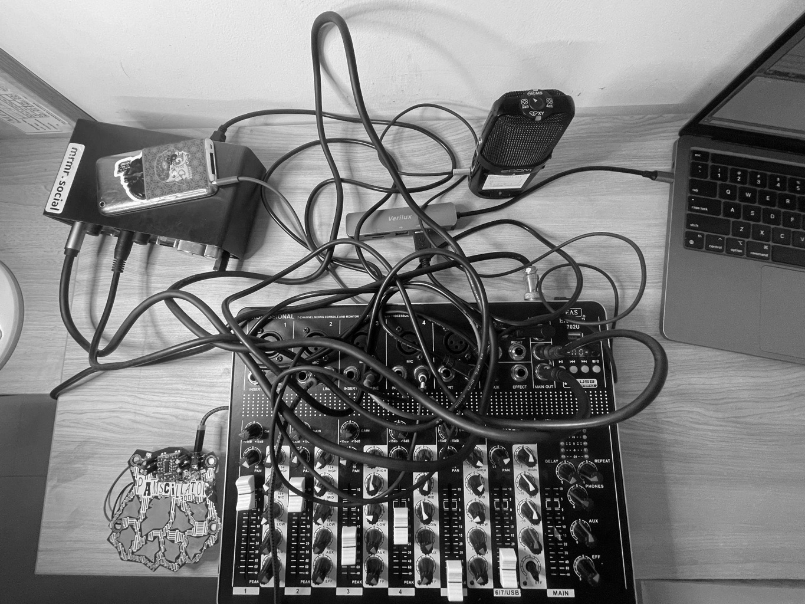

Metamorphosis signifies a change of form or structure—in biological terms, the process by which an organism physically develops through relatively abrupt transformations. This composition embodies this concept by challenging the conventional function of an audio mixer, repurposing it to generate multiple feedback loops using send channels that route audio back into itself. The microphone-speaker feedback transforms the loudspeaker from a playback device into an active instrument.
The composition explores feedback, room resonances and field recordings as primary compositional tools. It begins by routing a room microphone capturing and amplifying the resonant frequencies of the performance space. As the playback feeds back into the microphone, the resonant frequencies amplify in accordance to microphone and speaker position in the space. The input signal is further processed through multiple feedback loops to create rhythmic structures.
The composition also engages with clipping signals in the mixer as a sound design tool to achieve textures and saturation. This is mixed with field recordings of a river in Jammu and Kashmir, which serves as the fundamental sample underlying the piece. This river recording is progressively transformed, changing its original form. Additionally, a DIY noise generator is fed into the mixer which uses touch-sensitive resistors to manipulate textures and add rhythm to the sound output. Making noise from open-source circuits defies centralised control of musical interfaces. This DIY approach decentralizes music technology, making it accessible outside commercial systems.
The piece is entirely improvised—the materials at disposal determine the process and the composition is a result of the interaction I have with the machines and the recording space. This improvisational approach mirrors the unpredictable nature of metamorphosis itself. The structure is radical, with elements evolving suddenly and unpredictably. By combining organic field recordings with electronics, the dry river recording undergoes continuous transformation, emerging as rhythmic noise textures that bear little resemblance to the source.